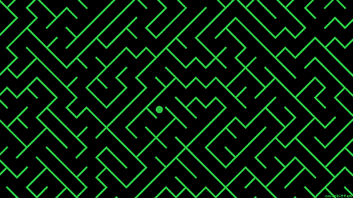

Project Details
Introduction
I developed a maze-solving algorithm to solve a text-based maze written using special characters like #, which represent walls,
and white spaces, which represent potential paths. The project includes two key algorithms:
Right Hand Rule
The right-hand rule algorithm involves following the right wall of the maze to find an exit. The player keeps its right hand (or side) touching a wall, continuously moving forward and turning right when possible. This simple rule is effective for solving mazes that have connected walls and are not completely isolated.
Breadth-First Search (BFS)
The BFS algorithm explores all possible paths level by level, starting from the starting point and expanding to neighboring cells. It uses a queue data structure to explore all available paths systematically, ensuring that it finds the shortest path to the exit. BFS is a guaranteed method for finding the shortest route in a maze, making it more efficient for more complex mazes.
More Features:
Another feature of the project allows users to input a possible solution to the maze. The program then verifies if the solution is correct by checking the path against the maze's layout.
Additionally, I implemented a benchmark mode that allows users to compare the performance of the two algorithms. The benchmark measures the number of moves required to solve the maze and the execution time for each algorithm.
User Interface
The user interacts with the project via the command line interface. They can choose from three specific flags:
- Request a solution for the maze
- Verify a user-provided solution
- Run a benchmark to compare algorithms
Project Toolkit
- Java: The main programming language used to develop the maze-solving algorithms and handle user inputs and outputs through the command line.
- JUnit: Used to write unit tests for verifying the functionality of each method and class in the project. It ensures correctness and prevents future bugs.
- SOLID Principles: These principles were applied to maintain clean, modular, and maintainable code. For instance, the "Single Responsibility Principle" ensured each class had a distinct purpose.
- GRASP Principles: These design principles helped guide decisions on object responsibility and interactions. The "Controller" pattern was used to handle user inputs efficiently.
- GoF Patterns: The project applied the "Strategy" pattern to switch between the BFS and right-hand rule algorithms dynamically, enhancing flexibility in choosing maze-solving strategies.
- SonarQube: Used for static code analysis to ensure code quality and detect potential issues such as code smells, duplications, or bugs. It helped maintain high coding standards throughout the project.
- Encapsulation: Applied to hide the internal logic of classes, exposing only the necessary methods. This made the code more secure and modular, allowing changes without breaking dependencies.
- Performance Benchmarking: Implemented to measure and compare the efficiency of the right-hand rule and BFS algorithms based on execution time and the number of moves, helping optimize the solution process.